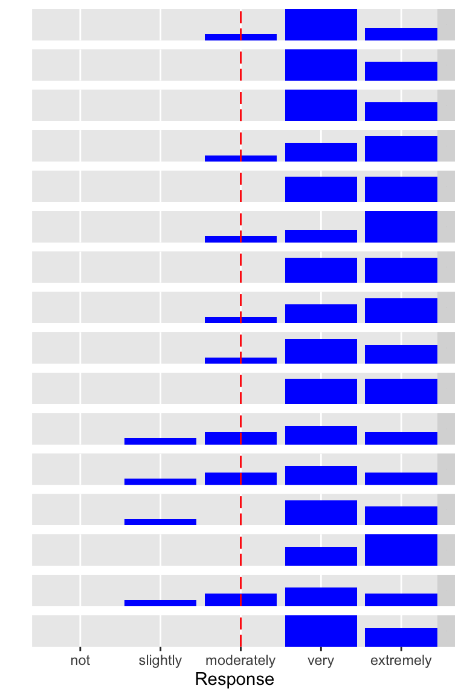
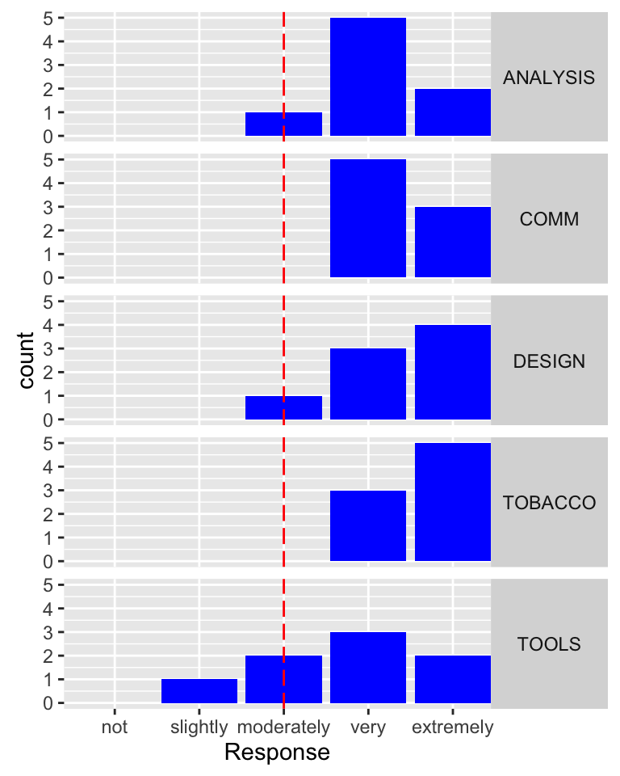
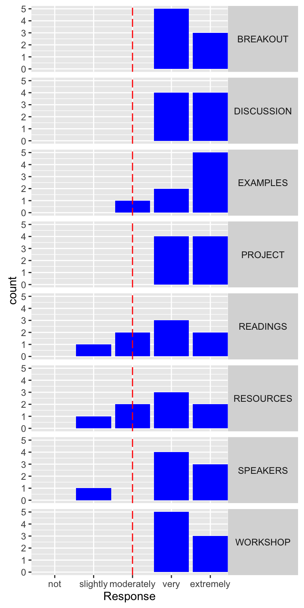
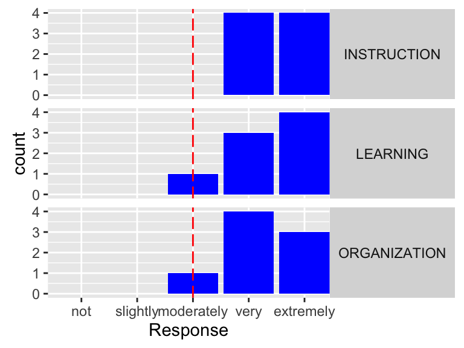

Results are from the post-course survey Winter Quarter 2016 (N = 8).
Learning Goals
- To learn some critical analytical tools for thinking in novel ways about large public health problems (ANALYSIS)
- To learn new skills that allow scholarly evidence to be communicated in compelling ways to a public audience (COMM)
- To gain new appreciation of what kinds of design choices go into making powerful visualizations (DESIGN)
- To think in new ways about tobacco as a global health problem (TOBACCO)
- To learn new tools in digital visualization (TOOLS)

Course Elements
- How useful to you were the in-class breakout groups? (BREAKOUT)
- How useful to you were the in-class discussions? (DISCUSSION)
- How helpful did you find the examples of past CIVs for your final project? (EXAMPLES)
- How useful to you was the final project? (PROJECT)
- How useful to you were the readings? (READINGS)
- How useful to you were the guest speakers? (SPEAKERS)
- How helpful did you find the collection of web tools that Claudia provided for development of your CIV? (RESOURCES)
- How much did workshopping allow you to achieve learning goals? (WORKSHOP)

Course Overall
- How would you describe the quality of the instruction in this course? (INSTRUCTION)
- How much did you learn from this course? (LEARNING)
- How organized was the course? (ORGANIZATION)

What skills or knowledge did you learn or improve?
“Data visualization skills”
“I improved upon my reading analysis and learning to critique other work.”
“I did not know much about tobacco at all, and particularly not the industry production side of the issue, so I learned a ton about that.”
“Multimedia skills and critical analysis skills”
“My thoughts on tobacco as a global health problem completely changed (I realized that tobacco companies completely skew the public’s perception of them and make tobacco seem like a solved problem of the past). My analytical skills of articles significantly improved.”
“Analytical tools to examine anthropology”
“Critical discussion of major issues, analyzing global problems through case studies, breaking down facts and problems to be clearly demonstrated”
“I learned a lot about cigarettes and big industry in general”
“I improved upon my reading analysis and learning to critique other work.”"